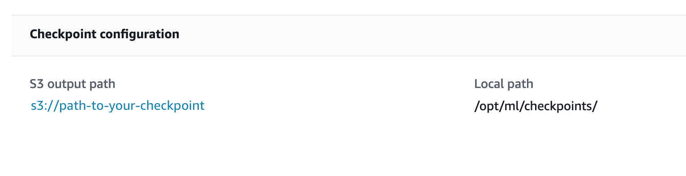

Use Checkpoints in Amazon SageMaker
Use checkpoints in Amazon SageMaker to save the state of machine learning (ML) models during training. Checkpoints are snapshots of the model and can be configured by the callback functions of ML frameworks. You can use the saved checkpoints to restart a training job from the last saved checkpoint.
The SageMaker training mechanism uses training containers on Amazon EC2 instances, and the
checkpoint files are saved under a local directory of the containers (the default is
/opt/ml/checkpoints). SageMaker provides the functionality to copy the
checkpoints from the local path to Amazon S3 and automatically syncs the checkpoints in that
directory with Amazon S3. Existing checkpoints in S3 are written to the SageMaker container
at the start of the job, enabling jobs to resume from a checkpoint. Checkpoints added to the
S3 folder after the job has started are not copied to the training container. SageMaker also
writes new checkpoints from the container to S3 during training. If a checkpoint is deleted
in the SageMaker container, it will also be deleted in the S3 folder.
Using checkpoints, you can do the following:
-
Save your model snapshots under training due to an unexpected interruption to the training job or instance.
-
Resume training the model in the future from a checkpoint.
-
Analyze the model at intermediate stages of training.
-
Use checkpoints with SageMaker managed spot training to save on training costs.
If you are using checkpoints with SageMaker managed spot training, SageMaker manages checkpointing your model training on a spot instance and resuming the training job on the next spot instance. With SageMaker managed spot training, you can significantly reduce the billable time for training ML models. For more information, see Use Managed Spot Training in Amazon SageMaker.
Topics
Checkpoints for Frameworks and Algorithms in SageMaker
Use checkpoints to save snapshots of ML models built on your preferred frameworks within SageMaker.
SageMaker frameworks and algorithms that support checkpointing
SageMaker supports checkpointing for AWS Deep Learning Containers and a subset of
built-in algorithms without requiring training script changes. SageMaker saves the
checkpoints to the default local path '/opt/ml/checkpoints' and copies them
to Amazon S3.
-
Deep Learning Containers: TensorFlow
, PyTorch , MXNet , and HuggingFace Note
If you are using the HuggingFace framework estimator, you need to specify a checkpoint output path through hyperparameters. For more information, see Run training on Amazon SageMaker
in the HuggingFace documentation. -
Built-in algorithms: Image Classification, Object Detection, Semantic Segmentation, and XGBoost (0.90-1 or later)
Note
If you are using the XGBoost algorithm in framework mode (script mode), you need to bring an XGBoost training script with checkpointing that's manually configured. For more information about the XGBoost training methods to save model snapshots, see Training XGBoost
in the XGBoost Python SDK documentation.
If a pre-built algorithm that does not support checkpointing is used in a managed spot training job, SageMaker does not allow a maximum wait time greater than an hour for the job in order to limit wasted training time from interrupts.
For custom training containers and other frameworks
If you are using your own training containers, training scripts, or other frameworks
not listed in the previous section, you must properly set up your training script using
callbacks or training APIs to save checkpoints to the local path
('/opt/ml/checkpoints') and load from the local path in your training
script. SageMaker estimators can sync up with the local path and save the checkpoints to
Amazon S3.
Enable Checkpointing
After you enable checkpointing, SageMaker saves checkpoints to Amazon S3 and syncs your training job with the checkpoint S3 bucket.
The following example shows how to configure checkpoint paths when you construct a
SageMaker estimator. To enable checkpointing, add the checkpoint_s3_uri and
checkpoint_local_path parameters to your estimator.
The following example template shows how to create a generic SageMaker estimator and enable
checkpointing. You can use this template for the supported algorithms by specifying the
image_uri parameter. To find Docker image URIs for algorithms with
checkpointing supported by SageMaker, see
Docker
Registry Paths and Example Code.
You can also replace
estimator and Estimator with other SageMaker frameworks'
estimator parent classes and estimator classes, such as TensorFlow, PyTorch, MXNet, HuggingFace and XGBoost.
import sagemaker from sagemaker.estimatorimportEstimatorbucket=sagemaker.Session().default_bucket() base_job_name="sagemaker-checkpoint-test" checkpoint_in_bucket="checkpoints" # The S3 URI to store the checkpoints checkpoint_s3_bucket="s3://{}/{}/{}".format(bucket, base_job_name, checkpoint_in_bucket) # The local path where the model will save its checkpoints in the training container checkpoint_local_path="/opt/ml/checkpoints" estimator =Estimator( ... image_uri="<ecr_path>/<algorithm-name>:<tag>" # Specify to use built-in algorithms output_path=bucket, base_job_name=base_job_name, # Parameters required to enable checkpointing checkpoint_s3_uri=checkpoint_s3_bucket, checkpoint_local_path=checkpoint_local_path )
The following two parameters specify paths for checkpointing:
-
checkpoint_local_path– Specify the local path where the model saves the checkpoints periodically in a training container. The default path is set to'/opt/ml/checkpoints'. If you are using other frameworks or bringing your own training container, ensure that your training script's checkpoint configuration specifies the path to'/opt/ml/checkpoints'.Note
We recommend specifying the local paths as
'/opt/ml/checkpoints'to be consistent with the default SageMaker checkpoint settings. If you prefer to specify your own local path, make sure you match the checkpoint saving path in your training script and thecheckpoint_local_pathparameter of the SageMaker estimators. -
checkpoint_s3_uri– The URI to an S3 bucket where the checkpoints are stored in real time.
To find a complete list of SageMaker estimator parameters, see the Estimator API
Browse Checkpoint Files
Locate checkpoint files using the SageMaker Python SDK and the Amazon S3 console.
To find the checkpoint files programmatically
To retrieve the S3 bucket URI where the checkpoints are saved, check the following estimator attribute:
estimator.checkpoint_s3_uri
This returns the Amazon S3 output path for checkpoints configured while requesting the
CreateTrainingJob request. To find the saved checkpoint files using the
Amazon S3 console, use the following procedure.
To find the checkpoint files from the Amazon S3 console
-
Sign in to the AWS Management Console and open the SageMaker console at https://console.aws.amazon.com/sagemaker/
. -
In the left navigation pane, choose Training jobs.
-
Choose the link to the training job with checkpointing enabled to open Job settings.
-
On the Job settings page of the training job, locate the Checkpoint configuration section.
 -
Use the link to the S3 bucket to access the checkpoint files.
Resume Training From a Checkpoint
To resume a training job from a checkpoint, run a new estimator with the same
checkpoint_s3_uri that you created in the Enable Checkpointing
section. Once the training has resumed, the checkpoints from this S3 bucket are restored
to checkpoint_local_path in each instance of the new training job. Ensure
that the S3 bucket is in the same Region as that of the current SageMaker session.
Considerations for Checkpointing
Consider the following when using checkpoints in SageMaker.
-
To avoid overwrites in distributed training with multiple instances, you must manually configure the checkpoint file names and paths in your training script. The high-level SageMaker checkpoint configuration specifies a single Amazon S3 location without additional suffixes or prefixes to tag checkpoints from multiple instances.
-
The SageMaker Python SDK does not support high-level configuration for checkpointing frequency. To control the checkpointing frequency, modify your training script using the framework's model save functions or checkpoint callbacks.
-
If you use SageMaker checkpoints with SageMaker Debugger and SageMaker distributed and are facing issues, see the following pages for troubleshooting and considerations.